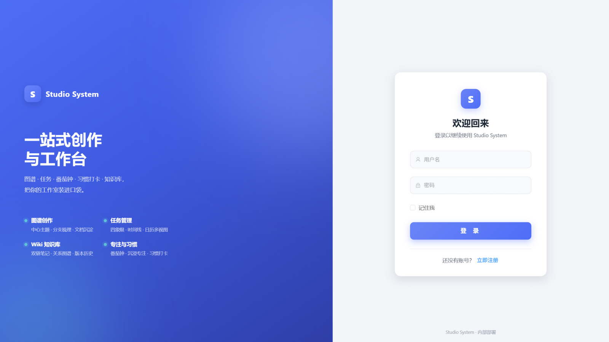
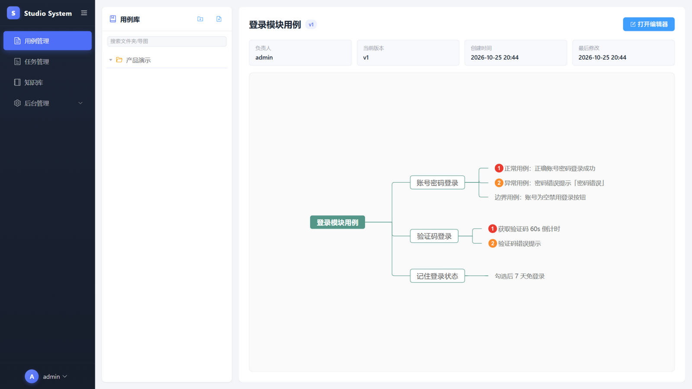
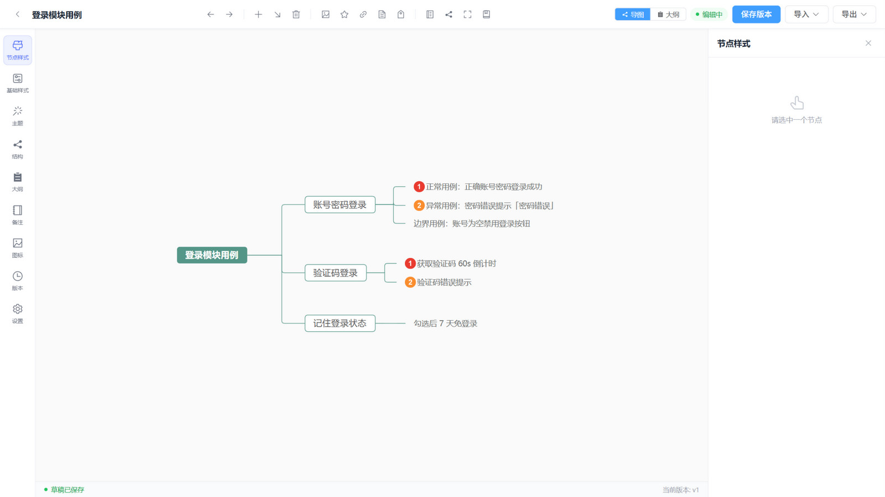
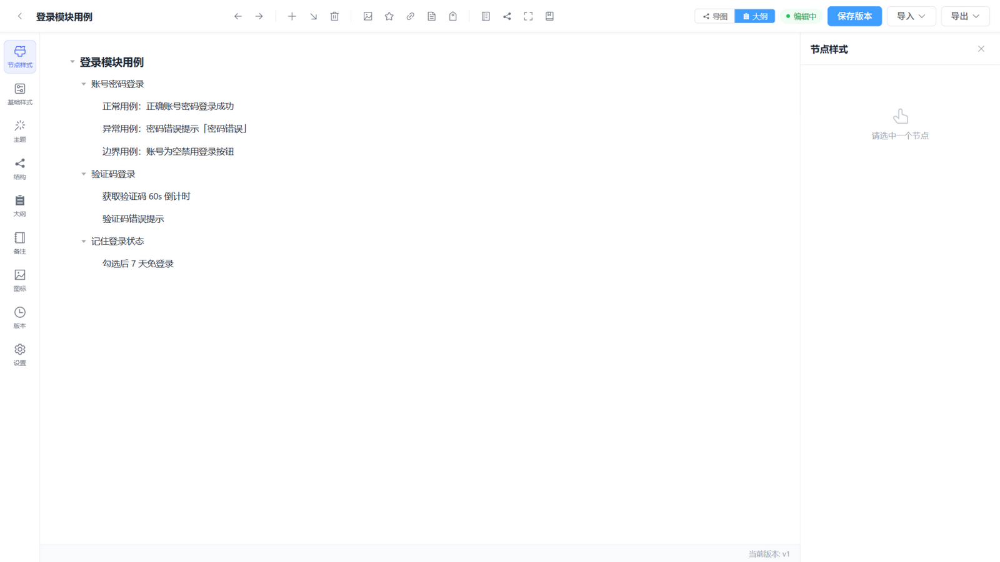
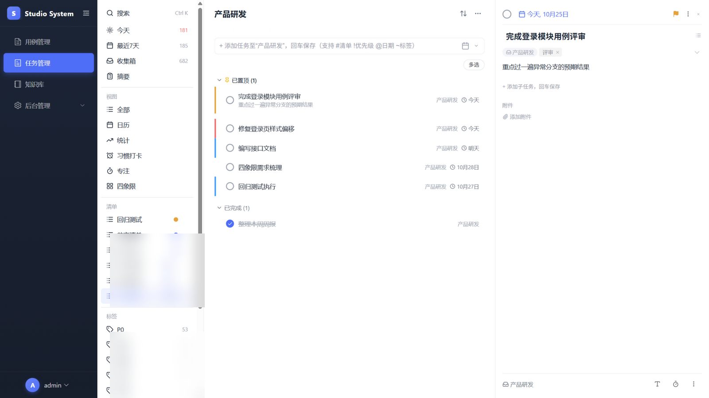
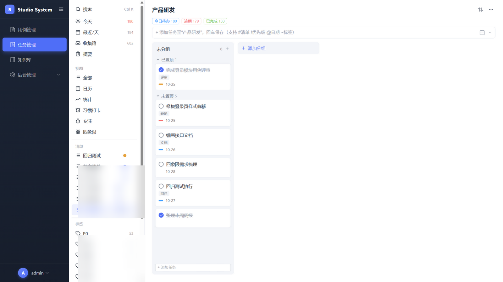
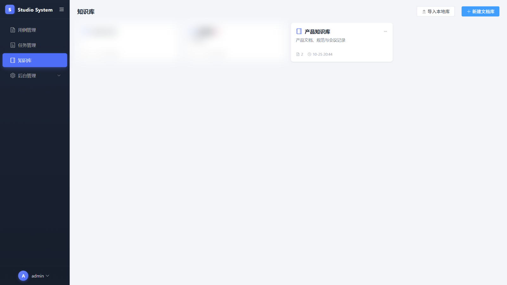
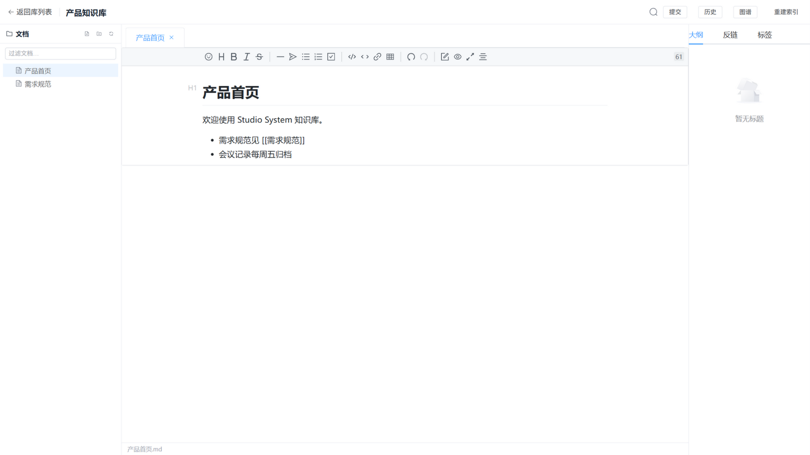
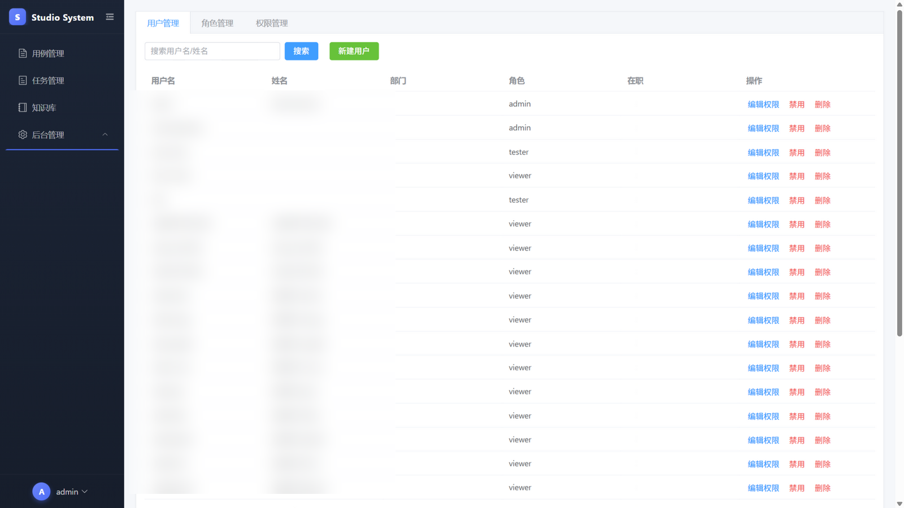

一站式创作与工作台
部署与使用文档
用例导图 · 任务管理 · 知识库 · 专注与习惯 —— 面向小团队的工作室级协作平台
项目简介
Studio System 是一个面向创作团队 / 测试团队的一站式工作台，把用例导图、任务管理、Wiki 知识库、番茄专注与习惯打卡整合在一个系统里，开箱即用：
- 用例管理：以思维导图组织测试用例或需求拆解，支持在线编辑、版本快照与回滚、XMind / Markdown 导入导出；
- 任务管理：对齐主流待办应用交互的任务系统——今天 / 最近 7 天 / 收集箱等智能清单，列表 / 看板 / 日历 / 时间线 / 四象限 / 统计多视图，番茄专注与习惯打卡；
- 知识库 Wiki：基于 Git 的在线 Obsidian——每个文档库是一个 Git 仓库，支持
[[双链]]、关系图谱、全文搜索、行级 diff 版本回滚； - 平台管理：用户 / 角色 / 权限（RBAC + ACL）后台，细粒度到每个模块的查看 / 编辑 / 删除 / 管理权限。
前后端分离：前端 Vue 3 SPA，后端 FastAPI + MongoDB，一个可私有化部署的完整系统。
功能总览
用例导图
思维导图式用例管理，节点图标标记优先级，版本快照、回滚、XMind 互导、层级文本大纲视图。
任务管理
清单 / 看板 / 日历 / 时间线 / 四象限 / 统计，智能清单聚合，快速添加语法，子任务与附件。
专注与习惯
番茄钟 / 正计时 / 沉浸模式，专注统计报表，每日习惯打卡与连续记录。
Wiki 知识库
Git 驱动的文档库：Markdown 所见即所得编辑、双链、反链、关系图谱、提交历史与回滚。
平台管理
用户 / 角色 / 权限三员管理，RBAC + ACL 细粒度授权，支持清单级共享协作。
私有化部署
前后端容器化交付，K8s 清单开箱可用，数据全部落在自己的 MongoDB 与 Git 仓库。
环境要求
| 组件 | 版本要求 | 说明 |
|---|---|---|
| Node.js | ≥ 18（镜像使用 20） | 前端构建与本地开发 |
| Python | ≥ 3.11（镜像使用 3.13） | 后端运行时 |
| MongoDB | ≥ 6.0 | 唯一业务数据库 |
| Git | 任意近期版本 | Wiki 模块依赖（GitPython 调用 git 可执行文件） |
| 文件存储 | 内置本地磁盘（默认） | 图片 / 附件开箱即用；STORAGE_BACKEND=s3 直连阿里云 OSS / 腾讯云 COS / 七牛 / MinIO 等 S3 兼容云，或对接自有文件服务 |
uv（后端）与 npm（前端）；Windows 下后端提供 start.bat 一键启动脚本。快速开始（本地开发）
4.1 启动后端
安装依赖
# 在 backend 目录下 $ uv venv $ uv pip install -e ".[dev]"
配置环境变量
复制 .env.example 为 .env，按需修改 MongoDB 地址与密钥：
# backend/.env MONGODB_URI=mongodb://localhost:27017/studio_system SECRET_KEY=change-me-in-production STORAGE_BACKEND=local # 文件存储：local（默认）| s3（S3 兼容云）| resourceplatform STORAGE_DIR=./data/uploads # local 模式的存储目录 CORS_ORIGINS=http://localhost:5173,http://127.0.0.1:5173
文件 / 图片默认存本地磁盘（STORAGE_DIR），经后端 /uploads 静态访问，零外部依赖；要对接已有文件服务（如自建 ResourcePlatform），设 STORAGE_BACKEND=resourceplatform 并填写 RESOURCEPLATFORM_BASE_URL / RESOURCEPLATFORM_TOKEN。
启动服务
# 方式一：Windows 双击 start.bat # 方式二：命令行（端口 8302，与前端代理一致） $ .venv/Scripts/uvicorn app.main:app --reload --port 8302
首次启动会自动初始化默认账号与权限数据。
4.2 启动前端
# 在 frontend 目录下 $ npm ci --prefix ../packages/simple-mind-map --omit=dev # 导图内核依赖（仅首次） $ npm ci $ npm run dev # http://localhost:5173
packages/simple-mind-map/（fork 自
wanglin2/mind-map，含功能定制），前端以
file: 依赖引用；它有独立的依赖清单，因此首次安装需先在其目录执行一次 npm ci。
升级上游或修改内核后，替换 packages/simple-mind-map/src 并重新安装即可。
4.3 登录系统
浏览器访问 http://localhost:5173，使用默认管理员账号登录：
| 用户名 | 密码 |
|---|---|
admin | admin123 |
ADMIN_INITIAL_PASSWORD 自定义初始密码；生产环境务必在首次启动前设置，并尽快修改默认密码。
生产部署
推荐容器化部署：后端与前端各自构建镜像，K8s 编排（仓库内含可直接使用的清单），MongoDB 与 ResourcePlatform 建议独立部署。
5.1 后端镜像
# 在 backend 目录下构建；内网基础镜像可通过 --build-arg 替换 $ docker build -t studiosystem-backend:latest \ --build-arg BASE_IMAGE=python:3.13-slim .
镜像内已安装 git（Wiki 模块依赖），健康检查端点为 /health，容器监听 8000 端口。
5.2 前端镜像
前端 Dockerfile 的构建上下文必须是工作区根目录（因 simple-mind-map 本地依赖在仓库外）：
# 在与 mind-map/ 、studiosystem/ 同级的目录执行 $ docker build -f studiosystem/frontend/Dockerfile \ --build-arg BASE_IMAGE=node:20-alpine \ -t studiosystem-frontend:latest .
构建参数（可在 Dockerfile 中按需调整）：
| 参数 | 默认值 | 说明 |
|---|---|---|
--base | /studio/ | 前端部署子路径 |
VITE_RP_BASE_URL | 资源平台地址 | 附件 / 图片的访问基地址 |
前端镜像基于 nginx:alpine，内置 SPA 回退与 /api/ 反代兜底；主链路建议由 Ingress 将 /api 转发到后端服务。
5.3 Kubernetes 编排
backend/deploy/deployment.yaml # Deployment（含资源限制与健康检查） backend/deploy/secret.yaml.example # 复制为 secret.yaml 后填入密钥
$ kubectl apply -f backend/deploy/secret.yaml $ kubectl apply -f backend/deploy/deployment.yaml
镜像仓库地址、命名空间可在 Makefile 与清单中按实际环境替换。
5.4 环境变量一览
| 变量 | 必填 | 说明 |
|---|---|---|
MONGODB_URI | 是 | MongoDB 连接串，如 mongodb://host:27017/studio_system |
SECRET_KEY | 是 | JWT 签名密钥，生产环境必须更换 |
ACCESS_TOKEN_EXPIRE_MINUTES | 否 | Token 有效期（分钟），默认 120 |
CORS_ORIGINS | 否 | 允许的跨域来源，逗号分隔 |
STORAGE_BACKEND | 否 | 文件存储后端：local（默认，本地磁盘）/ s3（S3 兼容云）/ resourceplatform（自有文件服务），配置示例见 5.5 |
STORAGE_S3_ENDPOINT_URL 等 | 否 | STORAGE_BACKEND=s3 时的 S3 兼容配置：端点 / AK / SK / 桶 / 寻址风格 / 公共域名（各云预设见 backend/.env.example） |
STORAGE_DIR | 否 | local 后端的存储目录（默认 ./data/uploads），生产环境指向持久化卷 |
RESOURCEPLATFORM_BASE_URL | 否 | resourceplatform 后端的服务地址 |
RESOURCEPLATFORM_TOKEN | 否 | resourceplatform 后端的访问令牌 |
ADMIN_INITIAL_PASSWORD | 否 | 首次启动时 admin 用户的初始密码 |
5.5 文件存储配置
三种后端按 STORAGE_BACKEND 切换，写入 backend/.env 即可，业务功能完全一致：
① local —— 本地磁盘（默认，推荐开源 / 单机部署）
STORAGE_BACKEND=local
STORAGE_DIR=./data/uploads # 生产环境指向持久化卷
② s3 —— S3 兼容对象存储（阿里云 OSS / 腾讯云 COS / 七牛 / 华为 OBS / MinIO / R2 / AWS S3）
# —— 阿里云 OSS 示例（先在控制台建桶，直链模式建议桶设为公共读）—— STORAGE_BACKEND=s3 STORAGE_S3_ENDPOINT_URL=https://oss-cn-hangzhou.aliyuncs.com STORAGE_S3_ACCESS_KEY=你的AccessKey STORAGE_S3_SECRET_KEY=你的SecretKey STORAGE_S3_BUCKET=桶名 STORAGE_S3_REGION=cn-hangzhou STORAGE_S3_ADDRESSING=virtual STORAGE_S3_PUBLIC_BASE=https://桶名.oss-cn-hangzhou.aliyuncs.com # 直链域名 / CDN；留空则 7 天预签名 # —— 腾讯云 COS：仅替换端点与公共域名 —— # STORAGE_S3_ENDPOINT_URL=https://cos.ap-shanghai.myqcloud.com # STORAGE_S3_PUBLIC_BASE=https://桶名.cos.ap-shanghai.myqcloud.com # —— MinIO（NAS 自建）：寻址用 path，公共域名留空走预签名 —— # STORAGE_S3_ENDPOINT_URL=http://你的NAS:9000 # STORAGE_S3_ADDRESSING=path
其它云的端点预设（七牛 / 华为 OBS / AWS S3）见 backend/.env.example。
③ resourceplatform —— 自建文件服务（已有部署沿用）
STORAGE_BACKEND=resourceplatform RESOURCEPLATFORM_BASE_URL=https://你的域名/resourceplatform RESOURCEPLATFORM_TOKEN=你的令牌
用例管理
用例库以「文件夹（最多三层）+ 导图」两级组织测试用例与需求拆解。左侧为用例树，右侧为选中导图的详情与只读预览。

6.1 用例库管理
| 操作 | 方式 | 说明 |
|---|---|---|
| 新建文件夹 | 工具栏 📁 / 空白处右键 / 文件夹右键「新建子文件夹」 | 弹窗内输入名称并选择位置（根目录或任意文件夹），最多三层 |
| 新建导图 | 工具栏 📄 / 右键菜单 | 弹窗内输入标题并选择位置，创建后自动打开编辑器 |
| 搜索 | 顶部搜索框 | 按名称实时过滤文件夹与导图 |
| 重命名 | 右键「重命名」或 F2 | 文件夹与导图均支持 |
| 删除 | 右键「删除」或 Delete | 软删除；删除文件夹时其下导图一并移入回收 |
| 复制 / 剪切 / 粘贴 | Ctrl C / Ctrl X / Ctrl V | 支持多选批量操作，导图可在文件夹间移动 |
| 多选 | Ctrl 点选加选、Shift 范围选 | 配合右键 / 快捷键批量管理 |
| 拖拽移动 | 直接拖动节点 | 文件夹与导图均可拖拽调整层级与顺序 |
选中导图后，右侧展示负责人、当前版本、创建 / 修改时间与只读导图预览；存在未保存草稿时会有醒目提示。点击「打开编辑器」进入在线编辑。
6.2 导入与导出
- 导入：把
.xmind/.md/.json文件直接拖入右侧面板，或通过工具栏「导入」菜单选择文件；JSON（.smm）格式包含主题与布局配置，可完整还原。 - 导出：编辑器「导出」菜单支持 PNG 图片、SVG 矢量图、PDF、Markdown、XMind、纯文本、JSON 七种格式。
导图编辑器与层级文本大纲
7.1 编辑器布局与工具栏
点击「打开编辑器」进入全屏编辑器，采用三栏布局：左侧功能面板（64px 图标栏 + 320px 详情栏）、中间画布、右侧节点详情；底部状态栏实时显示草稿保存状态与当前版本号。

顶部工具栏从左到右：
| 分组 | 功能 |
|---|---|
| 视图切换 | 「导图 / 大纲」一键切换（见 7.4），按地图记忆 |
| 编辑 | 撤销、重做、插入同级节点、插入子节点、删除节点 |
| 节点内容 | 图片、图标（优先级等标记）、超链接、备注、标签 |
| 结构元素 | 概要、关联线、外框、公式 |
| 文件 | 保存版本、导入（XMind / Markdown / JSON）、导出（PNG / SVG / PDF / MD / XMind / TXT / JSON） |
画布支持滚轮缩放与拖拽平移；常用快捷键：Tab 插入子节点、Enter 插入同级节点、Delete 删除节点、Ctrl Z / Ctrl Y 撤销重做。右键节点弹出上下文菜单，可快速完成上述大部分操作。
工具栏还提供：查找替换（Ctrl F，全图按文本搜索节点，支持逐个定位与批量替换）、格式刷（把选中节点的样式一键刷到下一个点击的节点）、小地图（右下角缩略图导航，拖动视口框快速移动画布）、演示模式（全屏逐节点播放，方向键 / 空格翻页，支持填空模式，适合用例评审）；内容超出画布时自动显示自定义滚动条。
7.2 左侧功能面板
- 节点样式：字体、字号、颜色、加粗 / 斜体 / 下划线、边框、背景、形状、内边距等节点级样式；
- 基础样式：整体主题的连线颜色 / 粗细 / 风格、节点间距、圆角等全局样式；
- 主题：内置多套配色主题一键切换；
- 结构：逻辑结构图、思维导图、组织结构图、目录组织图、时间轴等多种布局；
- 大纲：侧栏版可编辑大纲（与 7.4 的全屏大纲同源）；
- 备注 / 图标：节点备注编辑、图标库选择；
- 版本：版本快照列表、行级差异查看、一键回滚；
- 设置：编辑器偏好设置。
7.3 版本与协作
- 草稿自动保存：编辑停顿约 2 秒自动保存草稿；意外关闭后再次打开会询问是否恢复；
- 版本快照：「保存版本」手动生成快照（自动记录版本号），版本面板可查看每个版本的完整导图；
- 回滚：任意历史版本一键回滚，回滚生成新版本、不改写历史；
- 编辑锁：同一导图同一时间仅一人可编辑（1 分钟超时 + 心跳续期）。他人打开时自动进入只读预览并显示持有人，锁释放后即可接管；
- 只读场景：无编辑权限、查看历史版本、他人持锁时自动禁用编辑。
7.4 层级文本大纲
工具栏右上角「导图 / 大纲」一键切换到层级文本大纲视图：以缩进文本呈现整棵导图树，适合快速通读与批量整理用例。

| 操作 | 方式 | 说明 |
|---|---|---|
| 修改文本 | 点击节点文字直接编辑 | 失焦自动同步回导图画布 |
| 插入同级 | Enter | 在当前节点后插入并进入编辑 |
| 插入子级 / 升级 | Tab / Shift+Tab | 层级调整实时同步 |
| 排序移动 | 拖拽节点 | 支持拖到目标节点前 / 后 / 内部 |
| 删除节点 | Delete / Backspace | 选中后删除（根节点不可删） |
大纲视图的选择按地图记忆（下次打开恢复上次视图）；只读场景下自动切换为只读展示。所有编辑实时同步画布并走统一的草稿 / 版本链路。
任务管理
任务模块的交互以主流待办应用桌面端为参照，覆盖个人任务管理的完整闭环。左侧栏从上到下：智能清单（今天 / 最近 7 天 / 收集箱 / 摘要）、视图入口（全部 / 日历 / 统计 / 习惯打卡 / 专注 / 四象限）、自定义清单（颜色圆点 + 计数）、标签、过滤器，以及已完成 / 回收站与全局设置入口。
8.1 侧栏与清单管理
- 全局搜索：
Ctrl K（MacCmd K）唤起搜索面板，支持#标签语法按标签过滤； - 清单管理：清单右键可重命名 / 改色 / 共享 / 删除；清单可设置颜色与图标，共享给其他用户并指定 viewer / editor 角色；
- 标签：任务上使用
~标签即自动创建；侧栏展示标签计数，支持标签层级与颜色； - 过滤器：自定义条件（清单 / 标签 / 优先级等组合）保存为过滤器，一键筛选；
- 已完成 / 回收站：已完成任务聚合展示；删除的任务进回收站，可恢复或彻底删除。
8.2 列表视图与详情抽屉
列表视图为扁平任务行（无卡片边框，悬停浅灰底）：行内依次是优先级竖条、勾选框、标题、标签，右侧为所属清单名与日期（逾期红字）；置顶任务独立「已置顶」分组置顶展示。

详情抽屉（点击任务行滑出）：修改标题、日期与提醒、所属清单、标签；富文本备注支持待办 checkbox 行；可添加子任务、上传附件；底部可将任务设为番茄专注目标。
任务右键菜单提供完整快捷操作：快捷日期（今天 / 明天 / 下周 / 下月 / 清除）、优先级四档、添加子任务、置顶、移动到其他清单、标签增删、负责人、开始专注（番茄计时 / 正计时）、创建副本、复制应用内链接、关联主任务、任务与笔记互转、删除。
8.3 快速添加语法
在输入条中可用快捷语法一次性设置属性，回车保存；点击右侧 ⌄ 可展开完整设置（优先级 / 清单 / 标签 / 从模板添加 / 完整输入框），Shift+Enter 展开描述：
| 语法 | 示例 | 说明 |
|---|---|---|
#清单 | #产品研发 | 指定所属清单（未命中自动新建） |
!优先级 | !高 或 !3 | 高 / 中 / 低优先级 |
@日期 | @明天 @下周三 @10-30 | 截止日期，可叠加时间如 @明天 18:00 |
~标签 | ~缺陷 | 添加标签，可多个 |
在「今天 / 明天」智能清单中快速添加会自动带上对应日期；「添加任务至“今天”」等占位文案实时提示落点。
8.4 排序与分组
标题行右侧 ⇅ 菜单控制当前清单的排序与分组（按清单记忆）：
- 排序：默认（手动顺序）/ 时间 / 优先级 / 标题 / 创建时间，可选升序降序；
- 分组：自定义分组 / 清单 / 时间 / 创建时间 / 标签 / 优先级 / 无；
- 标题行
⋯菜单还提供：隐藏已完成、显示详细（行内描述预览）、显示检查事项（子任务默认展开）、打印当前清单。
8.5 看板视图
看板把任务组织为多列：清单视图按自定义分组分列（未分组列按已置顶 / 未置顶分区），智能清单则按当前分组维度（时间 / 优先级 / 清单 / 标签）分列。

- 列头操作：悬停出现
+（在列顶插入任务）与⋯菜单（重命名 / 在上方或下方添加分组 / 移动到其他清单 / 删除）；列头右键同样弹出菜单； - 添加分组：看板尾部内联输入框，回车即建，聚焦时显示新分组落位预览；
- 拖拽语义：跨列拖拽 = 智能修改属性（自定义分组列改分组、时间列改期、优先级列改优先级、清单列移动清单）；未分组列内置顶 / 未置顶分区拖拽即置顶 / 取消置顶；列内拖拽 = 手动排序；
- 列内添加：点击列头
+在列顶展开输入框，或使用列底「+ 添加任务」。
8.6 日历与时间线
- 日历：月 / 周 / 日 / 日程 / 多日 / 多周 / 年七种视图；卡片按清单着色，拖拽改期、拖到时间轴精确排时段；
- 时间线：甘特式条状视图，按日期铺开任务，适合查看任务跨度与依赖。
8.7 四象限
紧急 / 重要 2×2 矩阵整页展示：象限规则（参与哪些清单、紧急判定天数）可配置并存本地；卡片支持时间 / 清单 / 优先级分组与排序，跨象限拖拽即改属性，象限头部悬停出 + / ⋯ 新增与设置。
8.8 统计与摘要
- 统计：今日待办、逾期、已完成总量，清单 / 智能清单分布等报表；
- 摘要：按维度汇总的任务概览页。
8.9 番茄专注与习惯打卡
- 番茄专注：番茄计时（可配置时长）与正计时两种模式，支持沉浸模式与 Mini 悬浮条；选定任务开始专注，结束后记录专注会话；
- 专注统计：按日 / 清单聚合的专注时长报表；
- 习惯打卡：每日习惯列表，打卡 / 跳过 / 补记，展示当日进度（如 2/3）；任务模块侧栏直达。
8.10 批量操作与回收站
点击「多选」或按住 Ctrl / Shift 点选任务进入批量模式，右侧详情栏原位变为批量面板：
- 属性批量编辑：日期与提醒、推迟（明天 / 下周 / 下月，按各自日期整体平移）、优先级、移动到清单、批量加标签；
- 批量动作：完成、置顶、关联主任务（选中项转为某任务子任务）、创建副本、合并（多任务并为一个新任务的子任务）、打开便签、复制文本（按顺序复制标题）、删除；
- 回收站：已删除任务可恢复或彻底删除。
知识库 Wiki
Wiki 是基于 Git 的在线 Obsidian：每个文档库（Vault）对应一个 Git 仓库，文档即 Markdown 文件，天然拥有完整历史。支持创建空库、远程克隆、上传 zip 或导入服务器目录。

进入工作区后：左侧文档树（新建 / 移动 / 删除 / 过滤），中部 Vditor 所见即所得编辑（输入防抖自动保存，Ctrl S 保存），右侧大纲 / 反链 / 标签面板。

- 双链：
[[触发补全弹层；点击[[文档]]直接跳转，目标不存在时询问创建； - 关系图谱：ECharts 力导图展示文档间引用关系，按标签着色；
- 版本：手动提交（带提交说明）或定时自动提交，提交历史支持行级 diff 与回滚；
- 附件：直接粘贴图片上传，存入仓库
attachments/并随文档提交； - 同步：支持 pull / push 远程 Git 仓库，冲突以 409 返回并提示文件清单；
- 协作锁：窗口级编辑锁，他人持锁时自动切只读，锁释放后可一键接管。
后台管理与权限
「后台管理」（需 sys:manage 权限）提供用户、角色、权限三员管理：新建用户、分配角色、编辑权限、禁用与删除。

系统采用 RBAC + ACL：角色批量授予，亦可用 ACL 对单个用户微调。各模块权限点如下（前端按权限渲染操作入口，后端逐一校验）：
| 模块 | 权限点 |
|---|---|
| 用例管理 | xmind:view 查看、xmind:edit 编辑、xmind:delete 删除、xmind:manage 管理文件夹 |
| 任务管理 | task:view、task:create、task:edit、task:delete、task:share 共享、task:run 专注 |
| 知识库 | wiki:view、wiki:edit、wiki:delete、wiki:manage 管理库 |
| 平台管理 | sys:manage |
此外，用例导图与任务清单支持清单级共享：把清单共享给其他用户并指定 viewer / editor 角色。
目录结构
studiosystem/ ├── backend/ # FastAPI 后端 │ ├── app/ │ │ ├── api/v1/endpoints/ # 路由（case / task / wiki / platform …） │ │ ├── models/ # Beanie 文档模型 │ │ ├── schemas/ # Pydantic 入参 / 出参 │ │ ├── services/ # 业务逻辑 │ │ └── core/ # 配置、鉴权、异常 │ ├── deploy/ # K8s 清单 │ ├── tests/ # pytest 测试 │ ├── start.bat # Windows 一键启动 │ └── pyproject.toml ├── frontend/ # Vue 3 前端 │ ├── src/ │ │ ├── views/case/ # 用例管理 + 导图编辑器 │ │ ├── views/task/ # 任务管理（列表/看板/日历/四象限…） │ │ ├── views/wiki/ # 知识库 │ │ ├── stores/ # Pinia 状态 │ │ └── router/ │ ├── Dockerfile │ └── nginx.conf └── docs/ # 本文档
常见问题
Q1：npm ci 报错找不到 simple-mind-map？
前端依赖了仓库同级的本地目录 ../../mind-map/simple-mind-map。请按「快速开始」中的目录结构放置该目录，或将依赖改为 npm 版本。
Q2：后端启动失败，提示连接数据库失败？
确认 MongoDB 已启动且 MONGODB_URI 指向正确地址；首次启动会自动建库建集合，无需手动导入。
Q3：打开导图提示「被 xx 锁定」？
编辑锁机制：同一导图同一时间仅一人可编辑，锁 1 分钟超时自动释放。等待对方退出或锁超时即可；历史版本预览不受影响。
Q4：导图图片 / 附件上传失败？
图片与附件默认使用内置的本地磁盘存储（STORAGE_DIR 目录，经 /uploads 访问），无需部署任何外部服务。生产环境请把该目录挂载到持久化卷；若希望继续使用自建文件服务，设 STORAGE_BACKEND=resourceplatform 并配置对应地址与令牌。注意 K8s 部署时需在 Ingress / nginx 中把 /uploads 一并转发到后端。
Q5：忘记 admin 密码？
删除数据库中的用户集合后重启服务会以 ADMIN_INITIAL_PASSWORD（缺省 admin123）重新初始化 admin；或由其他管理员在后台重置。
Q6：端口被占用？
默认端口：前端开发 5173、后端开发 8302、后端容器 8000、MongoDB 27017。可在启动命令与 .env / Vite 代理中调整，保持前后端代理一致即可。
开源说明
- 正式开源前请完成：更换
SECRET_KEY与默认管理员密码、清理演示数据、确认.env/ 密钥文件不进入版本库（仓库已含.gitignore与secret.yaml.example模板）； - 本仓库依赖的
simple-mind-map为本地 fork（含功能定制），开源时请一并发布该目录或改用 npm 版本并回归测试； - 许可证：请根据开源策略选择（推荐 MIT / Apache-2.0），并在仓库根目录放置 LICENSE 文件后更新本节。
如果这个项目对你有帮助，欢迎 Star ⭐ 与 PR。